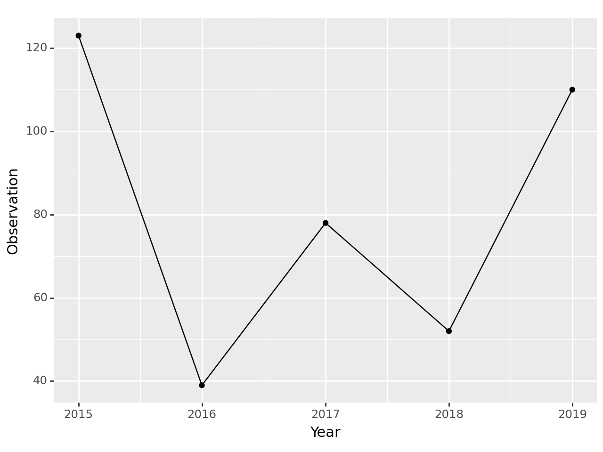
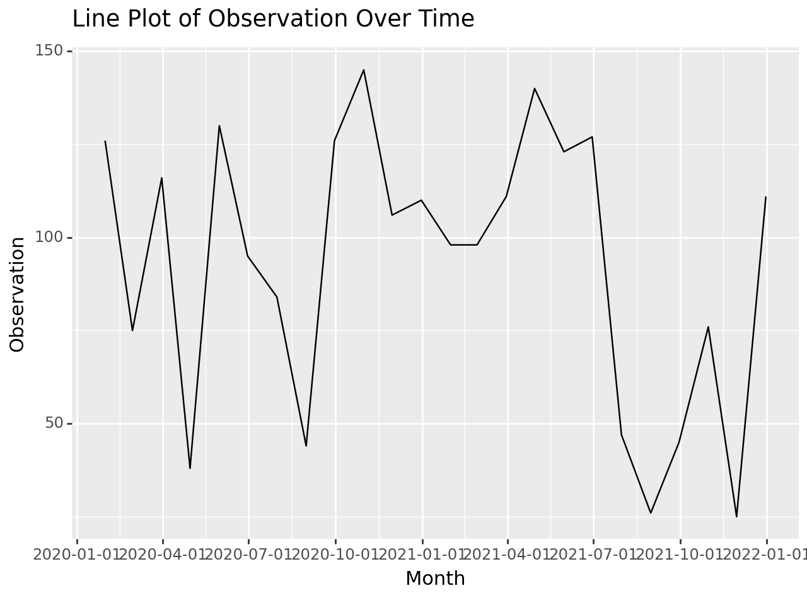
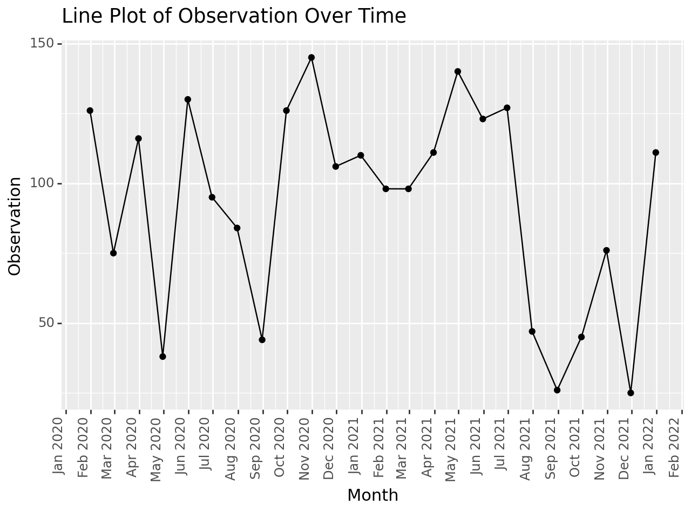
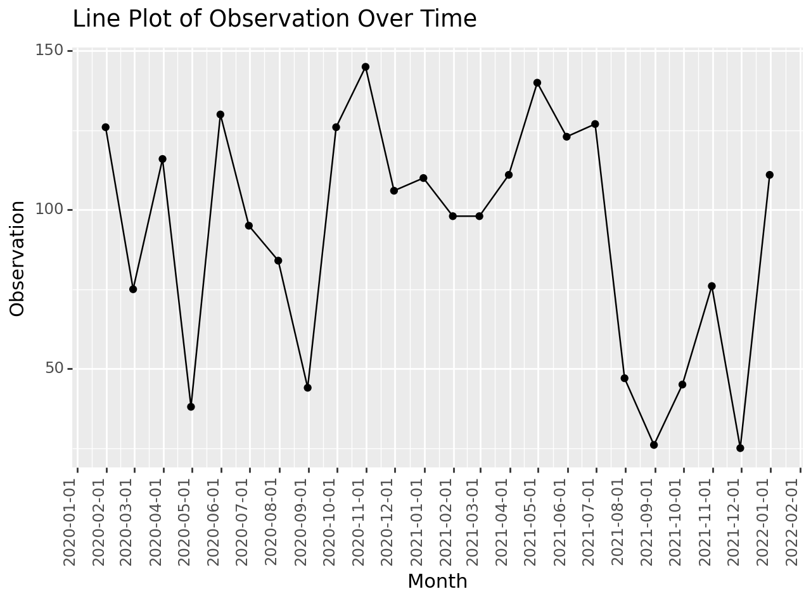
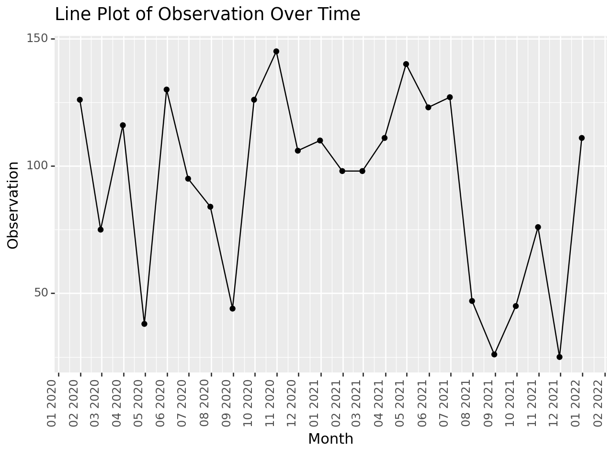
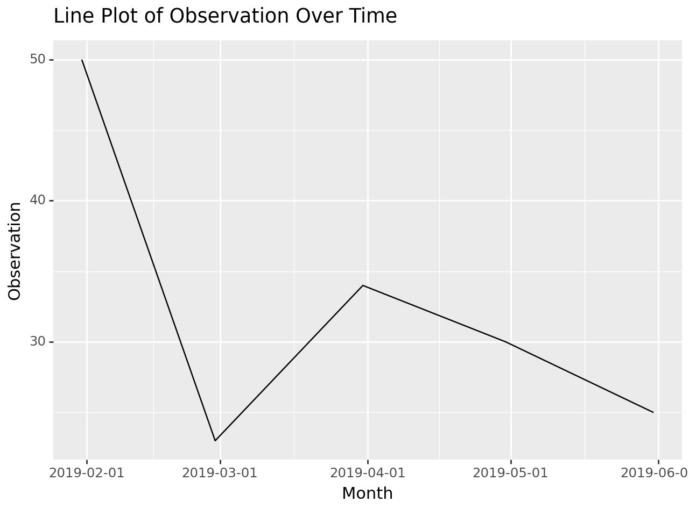

import pandas as pd
from pandas import *
import numpy as np
import plotnine as p9
from plotnine import *
import seaborn as sns
import matplotlib.pyplot as plt
import datetime
from datetime import *1 Time Series Wrangling
1.1 Creating Frequency Columns
Install the required packages using the following commands. If you are using RStudio IDE type the commands on the Terminal according to the following format
$ python -m pip install pandas
$ python -m pip install plotnineOtherwise, you can use the following format
import sys
!{sys.executable} -m pip install [package_name]Similarly install and load the following libraries
1.1.1 Annual Data
First , I create a simple pandas data frame.
# Creating a pandas DataFrame
data = {'Year': list(range(2015, 2020)),
'Observation': [123, 39, 78, 52, 110]}
df = pd.DataFrame(data)
df| Year | Observation | |
|---|---|---|
| 0 | 2015 | 123 |
| 1 | 2016 | 39 |
| 2 | 2017 | 78 |
| 3 | 2018 | 52 |
| 4 | 2019 | 110 |
Now, let’s check the data types of the variables in the above data frame.
df.info()<class 'pandas.core.frame.DataFrame'>
RangeIndex: 5 entries, 0 to 4
Data columns (total 2 columns):
# Column Non-Null Count Dtype
--- ------ -------------- -----
0 Year 5 non-null int64
1 Observation 5 non-null int64
dtypes: int64(2)
memory usage: 212.0 bytes(ggplot(df, aes("Year", "Observation"))
+ geom_point() + geom_line())<Figure Size: (640 x 480)>df['Year'] = pd.to_datetime(df['Year'], format='%Y')
df.info()<class 'pandas.core.frame.DataFrame'>
RangeIndex: 5 entries, 0 to 4
Data columns (total 2 columns):
# Column Non-Null Count Dtype
--- ------ -------------- -----
0 Year 5 non-null datetime64[ns]
1 Observation 5 non-null int64
dtypes: datetime64[ns](1), int64(1)
memory usage: 212.0 bytes(ggplot(df, aes("Year", "Observation"))
+ geom_point() + geom_line() +
scale_x_datetime(breaks='1 year', date_labels='%Y'))
<Figure Size: (640 x 480)>1.1.2 Quarterly
start_date = '2015-01-01'
end_date = '2020-12-31'
quarterly_dates = pd.date_range(start=start_date, end=end_date, freq='Q')
print("Quarterly Dates:")
print(quarterly_dates)Quarterly Dates:
DatetimeIndex(['2015-03-31', '2015-06-30', '2015-09-30', '2015-12-31',
'2016-03-31', '2016-06-30', '2016-09-30', '2016-12-31',
'2017-03-31', '2017-06-30', '2017-09-30', '2017-12-31',
'2018-03-31', '2018-06-30', '2018-09-30', '2018-12-31',
'2019-03-31', '2019-06-30', '2019-09-30', '2019-12-31',
'2020-03-31', '2020-06-30', '2020-09-30', '2020-12-31'],
dtype='datetime64[ns]', freq='Q-DEC')1.1.3 Monthly data
Example
# Generate a date range for the desired time period
date_range = pd.date_range(start='2020-01-01', end='2021-12-31', freq='M')
monthly_observation_df = pd.DataFrame()
# Add the date range and a randomly generated 'Observation' column
monthly_observation_df['Month'] = date_range
np.random.seed(42) # Setting seed for reproducibility
monthly_observation_df['Observation'] = np.random.randint(24, 150, size=len(date_range))
# Displaying the resulting DataFrame
print("Monthly Observation DataFrame:")
print(monthly_observation_df)
monthly_observation_df.info()Monthly Observation DataFrame:
Month Observation
0 2020-01-31 126
1 2020-02-29 75
2 2020-03-31 116
3 2020-04-30 38
4 2020-05-31 130
5 2020-06-30 95
6 2020-07-31 84
7 2020-08-31 44
8 2020-09-30 126
9 2020-10-31 145
10 2020-11-30 106
11 2020-12-31 110
12 2021-01-31 98
13 2021-02-28 98
14 2021-03-31 111
15 2021-04-30 140
16 2021-05-31 123
17 2021-06-30 127
18 2021-07-31 47
19 2021-08-31 26
20 2021-09-30 45
21 2021-10-31 76
22 2021-11-30 25
23 2021-12-31 111
<class 'pandas.core.frame.DataFrame'>
RangeIndex: 24 entries, 0 to 23
Data columns (total 2 columns):
# Column Non-Null Count Dtype
--- ------ -------------- -----
0 Month 24 non-null datetime64[ns]
1 Observation 24 non-null int32
dtypes: datetime64[ns](1), int32(1)
memory usage: 420.0 bytesplot = (ggplot(monthly_observation_df, aes(x='Month', y='Observation')) +
geom_line() +
labs(title='Line Plot of Observation Over Time'))
print(plot)
plot = (ggplot(monthly_observation_df, aes(x='Month', y='Observation')) +
geom_line() +
geom_point() +
labs(title='Line Plot of Observation Over Time') +
scale_x_datetime(breaks='1 month', date_labels='%b %Y') +
theme(axis_text_x=element_text(angle=90, hjust=1)))
print(plot)
plot = (ggplot(monthly_observation_df, aes(x='Month', y='Observation')) +
geom_line() +
geom_point() +
labs(title='Line Plot of Observation Over Time') +
scale_x_datetime(breaks='1 month', date_labels='%Y-%m-%d') +
theme(axis_text_x=element_text(angle=90, hjust=1)))
print(plot)
plot = (ggplot(monthly_observation_df, aes(x='Month', y='Observation')) +
geom_line() +
geom_point() +
labs(title='Line Plot of Observation Over Time') +
scale_x_datetime(breaks='1 month', date_labels='%m %Y') +
theme(axis_text_x=element_text(angle=90, hjust=1)))
print(plot)
%Y: Year with century as a decimal number (e.g., 2023).%m: Month as a zero-padded decimal number (e.g., 01 for January).%d: Day of the month as a zero-padded decimal number (e.g., 07).
date_range = pd.date_range(start='2019-01-01', end='2019-05-31', freq='M')
df_monthly = pd.DataFrame()
# Add the date range as a 'Month' column
df_monthly['Month'] = date_range
df_monthly['Observation'] = [50, 23, 34, 30, 25]
# Display the resulting DataFrame
print("Monthly DataFrame:")
print(df_monthly)
df_monthly.info()
plot = (ggplot(df_monthly, aes(x='Month', y='Observation')) +
geom_line() +
labs(title='Line Plot of Observation Over Time') +
scale_x_datetime(breaks='1 month'))
print(plot)Monthly DataFrame:
Month Observation
0 2019-01-31 50
1 2019-02-28 23
2 2019-03-31 34
3 2019-04-30 30
4 2019-05-31 25
<class 'pandas.core.frame.DataFrame'>
RangeIndex: 5 entries, 0 to 4
Data columns (total 2 columns):
# Column Non-Null Count Dtype
--- ------ -------------- -----
0 Month 5 non-null datetime64[ns]
1 Observation 5 non-null int64
dtypes: datetime64[ns](1), int64(1)
memory usage: 212.0 bytes
1.1.4 Weekly
start_date = '2015-01-01'
end_date = '2020-12-31'
weekly_dates = pd.date_range(start=start_date, end=end_date, freq='W')
print("Weekly Dates:")
print(weekly_dates)Weekly Dates:
DatetimeIndex(['2015-01-04', '2015-01-11', '2015-01-18', '2015-01-25',
'2015-02-01', '2015-02-08', '2015-02-15', '2015-02-22',
'2015-03-01', '2015-03-08',
...
'2020-10-25', '2020-11-01', '2020-11-08', '2020-11-15',
'2020-11-22', '2020-11-29', '2020-12-06', '2020-12-13',
'2020-12-20', '2020-12-27'],
dtype='datetime64[ns]', length=313, freq='W-SUN')1.1.5 Hourly
start_date = '2015-01-01 00:00:00'
end_date = '2015-01-01 23:59:59'
hourly_dates = pd.date_range(start=start_date, end=end_date, freq='H')
print("Hourly Dates:")
print(hourly_dates)Hourly Dates:
DatetimeIndex(['2015-01-01 00:00:00', '2015-01-01 01:00:00',
'2015-01-01 02:00:00', '2015-01-01 03:00:00',
'2015-01-01 04:00:00', '2015-01-01 05:00:00',
'2015-01-01 06:00:00', '2015-01-01 07:00:00',
'2015-01-01 08:00:00', '2015-01-01 09:00:00',
'2015-01-01 10:00:00', '2015-01-01 11:00:00',
'2015-01-01 12:00:00', '2015-01-01 13:00:00',
'2015-01-01 14:00:00', '2015-01-01 15:00:00',
'2015-01-01 16:00:00', '2015-01-01 17:00:00',
'2015-01-01 18:00:00', '2015-01-01 19:00:00',
'2015-01-01 20:00:00', '2015-01-01 21:00:00',
'2015-01-01 22:00:00', '2015-01-01 23:00:00'],
dtype='datetime64[ns]', freq='H'){## Derive variables from the time column}